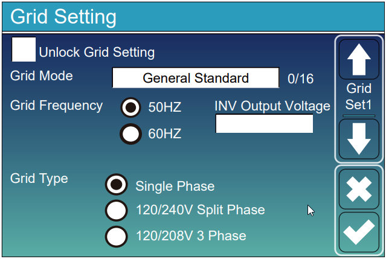
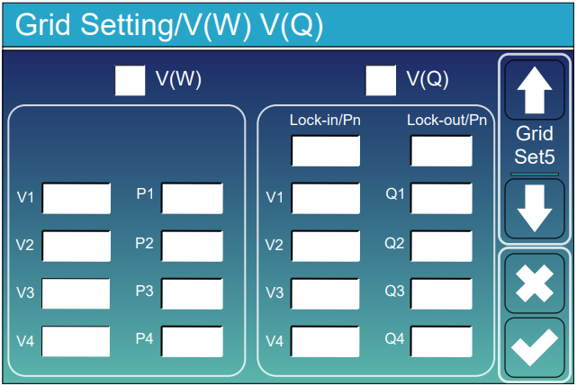

Volt-Watt & Volt-VAr · Конфігуратор порогів напруги мережі
Підбір кривих для уникнення зростання напруги мережі вище заданого порогу. Сторінка допомагає швидко розрахувати точки V1–V4 під ваш INV Output Voltage, щоб інвертор починав зменшувати активну потужність і коригувати реактивну при зростанні напруги.
Використовується як V1 для V(W) і V3 для V(Q).
Використовується як V4 для V(W) та V(Q).
Використовується для розрахунку фактичної потужності на графіку V(W).

